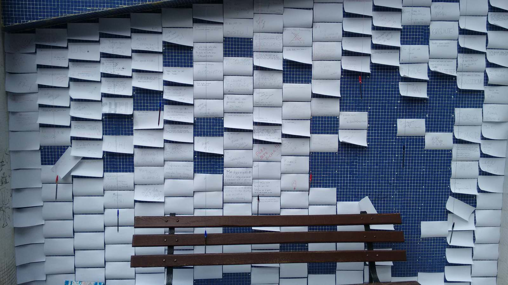
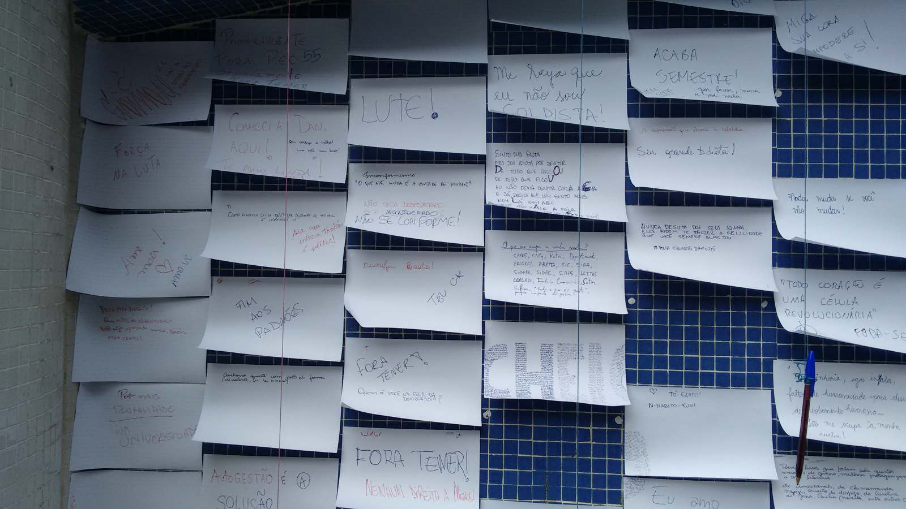
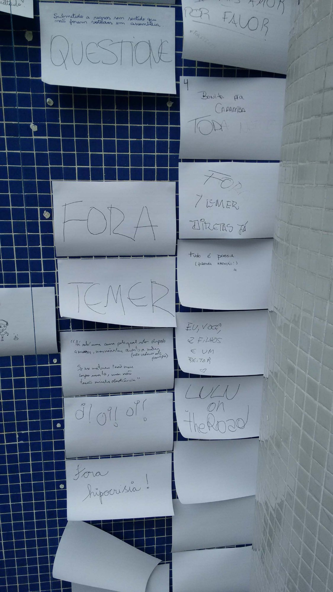
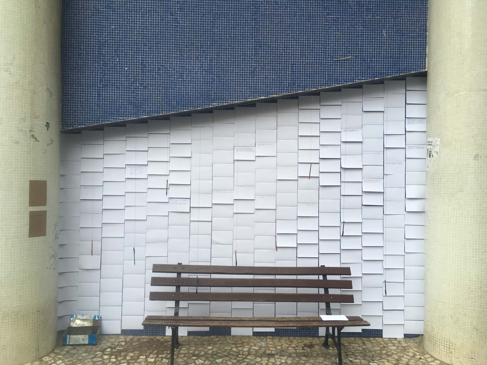
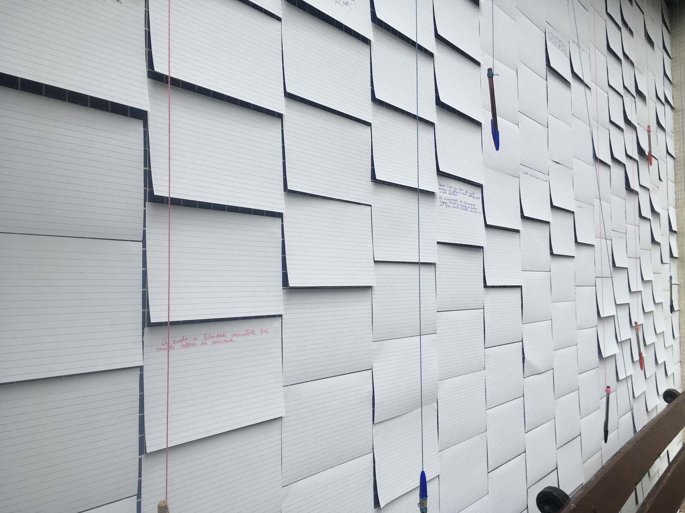
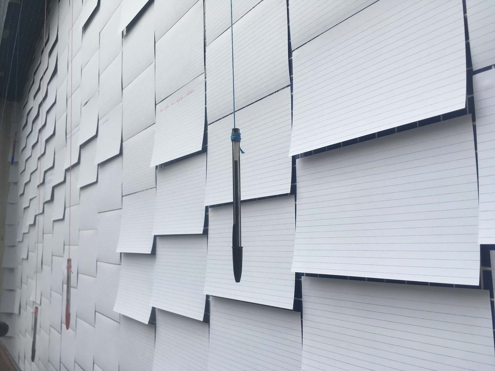

pauta para ocupar (agenda to occupy)




2016
site specific
pautas e


canetas
(pens and flashcards)
ação feita em parceria com os secundaristas de curitiba
(work made with the secondary students of curitiba)